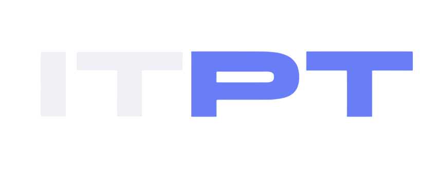

01 / ITPTINTERVIEW × AI

Speak. Learn. Grow.
IT INTERVIEW PRACTICE TOOL
[ 01 — ABOUT ]
안녕하세요, 소프트웨어 엔지니어 정지석입니다.
문제를 이해하고 필요한 기술을 연결해
실제로 사용할 수 있는 서비스를 만듭니다.
서비스 개발 경험을 바탕으로 LLMOps, 데이터 활용과 인프라까지
관심 영역을 넓히며, 서비스가 만들어지고 운영되는
전체 흐름을 고민합니다.
[ 02 — SELECTED WORK ]
아이디어에서 실제 서비스까지.
직접 기획하고 개발한 프로젝트입니다.

Speak. Learn. Grow.
 chronote
chronoteMake your time matter.
[ 03 — TOOLKIT ]
아이디어를 구현하는 기술들.
Python · JavaScript · Java
FastAPI · React · Spring Boot
MySQL · MongoDB · 데이터 활용
OpenAI API · Clova Speech STT
Docker / Compose · AWS EC2
GitHub Actions · HTTPS
[ 04 — JOURNEY ]
배우고, 만들고, 성장해 온 과정.
소프트웨어학과
CS 기술 면접 준비 플랫폼
서비스 개발 · AI 연동 · 배포
AI 기반 학습 관리 플랫폼
학습 데이터 활용 · 스터디 매칭
[ 05 — WHAT'S NEXT? ]
함께 만들 다음 이야기를 기다립니다.
편하게 연락 주세요.